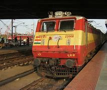
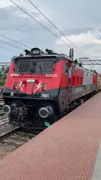
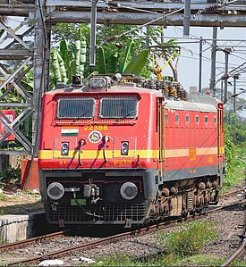

WAP 4 Locomatives
WAP 1

The Indian locomotive class WAP-1 is a class of 25 kV AC electric locomotives that was developed in 1980 by Chittaranjan Locomotive Works for Indian Railways. The model name stands for broad gauge (W), AC Current (A), Passenger traffic (P) locomotive, 1st generation (1). They entered service in late 1981. A total of 65 WAP-1 were built at CLW between 1980 and 1996, which made them the most numerous class of mainline electric passenger locomotive until its successor, the WAP-4.
The WAP-1 is India's first dedicated electric passenger locomotive of Indian Railways, and has provided the basic design for a number of other locomotives like WAP-3 and WAP-4 models. However, with the advent of new 3-phase locomotives like WAP-5 and WAP-7, the WAP-1 locomotives were relegated to hauling smaller express and passenger trains and now the aging fleet the WAP-1 locomotives are being slowly withdrawn from mainline duties and scrapped.
As of March 2024, 55 locomotives still retain "operational status" on the mainline as WAP-1, with further examples having been converted to WAP-4.
Backround

In the early 1980s, Indian Railways began considering developing a passenger version of its WAM-4 class.[1][failed verification] Designed for both passenger and goods trains the WAM-4 was one of the most successful locomotives of the 1970s and a mainstay of the Indian Railways.
Five prototype locomotives of this type were ordered from CLW to the design of RDSO. The first prototype locomotive was put into service in 1981.[2] They were first used on the Howrah Rajdhani Express.[3]
The locomotive is powered by six axle-hungs, nose-suspended forced ventilated type DC traction motors. Speed control is achieved by grouping in 2S-3P combination and by field weakening of the motor. It utilises a silicon rectifier for conversion of AC power into DC.[i][4]
They are being converted to make them suitable for multiple operations. Compressed air brakes for the locomotives and vacuum brakes for the train are provided. The brake system is being modified to make them suitable for dual brakes.[citation needed]
The WAP-1 provided the basis for the WAP-4.
Varients

The WAP-3 was the upgraded variant of the WAP-1 with a higher top speed of 140 km/h. All units of this class were WAP-1 units already in service. The first locomotive converted was a WAP-1 22005 Jawahar. Subsequently 8 more WAP-1 were converted, but since the class were not a great success and had performance issues, these were converted back to WAP-1 in 1997.One WAP-1 locomotive, 22004, has been preserved at Arakkonam shed.
WAP 2

The Indian locomotive class WAP 2 was a class of 25 kV AC electric locomotives that were rebuilt Mitsubishi WAM 2 locomotives imported from japan in 1960s for Indian Railways. A total of 4 WAP 2 locomotives were built by The Asansol Electric Locomotive shed somewhere around Early 1980s. They were in service for a Brief period of time The WAP 2 Was an Experimental Class that was meant to produce More powerful Electric Locomotives for Passenger service. On rare occasions, the WAP 2 also got to Haul the Howrah Rajdhani.
History

The WAP 2 were Re geared versions of WAM 2 Locomotives Imported from Japan during 1960-64. Unlike Conventional WAM 2 units, WAP 2 had improved but essentially same Bogies that allowed them to reach much higher speeds. All units were Assigned to Asansol Shed and plied around Eastern Railway. They were some of the rare Locomotives that got to Haul the Prestigious Howrah Rajdhani during their Hay days.Much of their Service Details are Unknown apart from Rail fan Anecdotes. They were Decommissioned and withdrawn from Mainline service in late 1980s.
WAP 3

The Indian locomotive class WAP-3 was a class of 25 kV AC electric locomotives that was designed by Research Design and Standards Organisation (RDSO) and Chittaranjan Locomotive Works (CLW) for Indian Railways in 1987. The model name stands for Broad gauge (W), AC Current (A), Passenger traffic (P) locomotive, 3rd generation (3). They entered service in 1988. They were the faster variant of the previous WAP-1 class. A total of 9 WAP-3 were converted from existing WAP-1 units at CLW between 1987 and 1988, but were later reverted back to WAP-1 specifications.
History

The history of the WAP-3 begins in the early 1980s with the WAP-1 class. The WAP-1 was the first attempt to create a dedicated high-speed electric passenger locomotive.[1] They were first used on the Howrah Rajdhani Express,[2] but Indian Railways was not satisfied with the performance of the WAP-1, as they could haul around 19 coaches at a max speed of 120 km/h. So Indian Railways decided to procure a faster version of the WAP-1.[3]
The WAP-3 was ordered from CLW to the design of RDSO. The Flexicoil cast steel bogies of the WAP-1 was replaced by Flexicoil Mark II versions. This increased max speed to 140 km/h.[citation needed] Five prototype locomotives of this type were made from existing WAP-1 units.

The first prototype WAP-1 numbered '22005 Jawahar' was put into service in 1988.[citation needed] Initially these locomotives were classified as WAP-1 FM II,[4] with FM II standing for " Flexicoil Mark II " and were certified to run at 130 km/h between Jhansi and lalitpur section.[5] Later Flexicoil Mark 4 bogies were provided for Subsequent WAP-3 which increased max speed to 160 km/h.[citation needed]
They were first used on the Taj Express and then the Shatabdi express.[6][7] The Bhopal Shatabdi used to run with WAP-3 for some time.[8] But as trains got longer the WAP-3 struggled to perform and required banking locomotives on moderately graded sections, and so did not meet their design goals these were reverted to WAP-1 class again.[citation needed][when?]
The WAP-3 and WAP-1 provided the basis for the WAP-4 class.
WAP 4

The Indian locomotive class WAP-4 is a class of 25 kV AC electric locomotives that was developed in 1993 by Chittaranjan Locomotive Works for Indian Railways. The model name stands for broad gauge (W), AC Current (A), Passenger traffic (P) locomotive, 4th generation (4). They entered service in late 1994. A total of 778 WAP-4 were built at CLW between 1993 and 2015, which made them the most numerous class of mainline electric passenger locomotive until the WAP-7.
The WAP-4 is one of the most successful locomotives of Indian Railways[peacock prose] serving passenger trains for over 29 years. This class provided the basic design for other locomotives like the WAP-6. Despite the introduction of more modern types of locomotives like WAP-7, a significant number are still in use, both in mainline duties. Production of this class was halted in December 2015 with locomotive number 25051 being the last unit to be rolled out.
As of September 2022, all locomotives except those lost in accidents still retain "operational status" on the mainline as WAP-4, with further examples having been converted from WAP-6.
History

The WAP-4 class was developed after its predecessor, the WAP-1, was found inadequate to haul the longer, heavier express trains (24-26 coaches) that were becoming the mainstay of the Indian Railways network. IR/RDSO had realized that the reason for the WAP-1’s performance problems were the low-powered 770 hp Alstom TAO 659 traction motors. These were previously used with for the WAM-4 and WAG-5 classes but were too underpowered for modern requirements. At that time, new 840 hp Hitachi 15250 traction motors which had been adopted for use on newer WAG-5s was showing promise. So, these traction motors were adopted on to WAP-1s Flex-icoil Mark I fabricated bogies, and with a new indigenously designed 5400 kVA transformer and silicon rectifiers.[1]
It also was among the first locomotives to get a microprocessor-based control and fault diagnostics system. To accommodate the heavier Hitachi motors without increasing its 112t overall weight, the WAP-4 was made substantially lighter by the widespread use of aluminum materials in construction. The underframe of WAP-4 is narrower and lighter and also completely different from that of the WAP-1 to enable it to handle higher loads.
DESIGN

The loco has a streamlined twin cab carbody design, with top-mounted headlamps. The first 150 or so units had the headlamp mounted at waist level, with the lights being mounted in a protruding nacelle. Later on the headlamps were placed in a recessed nacelle, and from road # 22573 onward, the headlamps were moved to the top. Newer locos also feature larger windshields, more spacious driver cabin with bucket type seats and ergonomic controls. The control panel also features a mix of digital and analog displays in newer units (all analog display in older versions).
PRODUCTION

The first WAP-4 unit, #22201 rolled out from CLW on April 25, 1994. They looked exactly like the WAP-1, even sporting the same livery. From 2000, newer versions with many WAP-5 design cues like square type windscreens ,twin-beam headlights, speed recorders and some changes to the control electronics had been rolled out recently.However, in the face of the advent of three-phase AC traction motors, IGBT-controlled AC drives, and full computer controls, the DC traction motors was getting increasingly outdated. As a result, after over 20 years, production of the WAP-4 locomotives ceased on November 1, 2015, with the 776th unit, #25051, being rolled out.
SERVICE

The WAP-4s were developed at the same time IR gave procurement orders for WAP-5 locomotives, as they were meant for more general duties of hauling 24-coach expresses while WAP-5 were specially meant for high-speed operations.[citation needed]
Recently as per directive received from Railway Board,all the loco sheds holding WAP-4 type locomotives have started multiple unit (MU) operations. This configuration of MU-fitted WAP-4 locos are being used to haul medium tonnage faster freight trains across IR. The different locomotive sheds of WAP-4 are Arakkonam, Santragachi, Erode, Mughalsarai, Howrah and Bhusaval